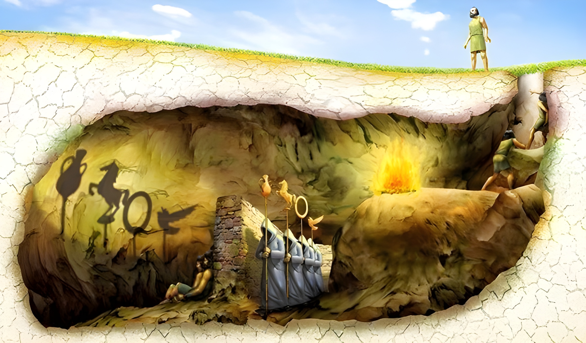

Sobre Nossa Equipe
Publicado em 12/05/2025Nosso grupo é formado por quatro pessoas com diferentes perspectivas:
Kaique
Isabel
Lara
Afonso
"A filosofia nasce do diálogo entre diferentes mentes curiosas"

Alegoria da Caverna
Publicado em 12/05/2025Contexto Filosófico
Na obra "A República", Platão apresenta através de Sócrates a metáfora da caverna como crítica à percepção humana da realidade...
O Processo de Libertação
A jornada do prisioneiro rumo ao conhecimento verdadeiro representa o caminho filosófico...
O Dilema Ético
Platão questiona a responsabilidade do filósofo em compartilhar seu conhecimento...
Atualidade da Metáfora
Na era digital, a caverna ganha novos significados com as redes sociais e filtros de informação...